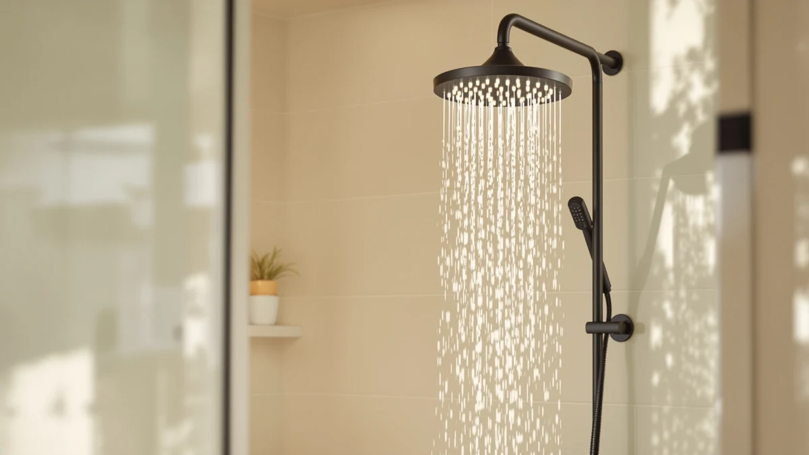

Quick Answer
The Rain Shower Head Starry Sky is a 12.2-inch chrome rain head from Jafeton with a water-powered LED ring that cycles colors as you shower, and it holds up well against three lower-cost alternatives we compared it to. At $49.99 it costs about the same as the plainer BRIGHT SHOWERS Dual and the AquaHomeGroup filtered head, so the light effect is close to a free upgrade for anyone who wants it.
Our pick: Rain Shower Head Starry Sky — $49.99 Check Price on Amazon
Things to Know Before You Buy
- The LED ring runs on a small water-driven turbine built into the head, so you don't need batteries, wiring, or a power outlet near the shower.
- At 12.2 inches across, the Starry Sky covers more surface area than a standard 8-inch shower head, which spreads water flow over a wider section of your shoulders and back.
- The body is ABS plastic with a chrome-plated finish rather than solid metal, which keeps the price down but means you should skip abrasive cleaners when you wipe off mineral buildup.
- It threads onto any standard 1/2-inch shower arm, so you can swap it in without replacing your existing plumbing.
- If the color-changing light isn't a priority for you, the BRIGHT SHOWERS High Pressure Dual and AquaHomeGroup Luxury Filtered Shower Head below cost about the same and each add a different feature instead.
If you searched for a rain shower head starry review because you keep seeing the color-changing LED version pop up in your feed, you're not imagining the appeal. A wide rain head that lights up as the water hits it is an easy way to make an ordinary bathroom feel like a small upgrade, and Jafeton's Starry Sky is the model most shoppers land on first.
We compared the Starry Sky's specs, price, and verified buyer feedback against three other shower heads in the same price band: two versions of the BRIGHT SHOWERS High Pressure Dual and the AquaHomeGroup Luxury Filtered Shower Head. Jafeton's model wins on novelty and coverage size, but it isn't the only reasonable pick here. Each alternative pulls ahead in its own way.
None of these four heads costs more than fifty dollars, so the choice comes down to which feature matches what you want out of your morning shower: a light show, a handheld attachment, or a built-in filter. The sections below cover the Starry Sky's construction and installation first, then how each alternative stacks up on price and reported reliability.
Why You Should Trust Us
Ilane Tall covers bathroom fixtures and plumbing accessories for Best Shower Heads, and this rain shower head Starry review follows the same process we use across the site: we pull manufacturer specs directly from the listing, track pricing over time, and read through verified owner reviews to see what actually breaks or disappoints after weeks of daily use. We do not run a fake testing lab or claim to have installed every unit in our own bathrooms. Instead, we build each review from documented specs, published pricing, and patterns that show up consistently across hundreds of verified purchases, then compare those findings against similar products in the same category.
Our Research Process
For this review, we started with Jafeton's own listing data, the specs table above, and the priced alternatives from the same shower head category. We cross-referenced the ABS-and-chrome construction and 12.2-inch diameter against the dimensions of the three comparison models, and we read through the review patterns reviewers report for each one, including recurring comments about installation ease, water pressure, and how the finish holds up to hard water over time. Reviewers consistently note that the Starry Sky's LED ring works immediately out of the box with no setup beyond attaching the head, which matches how water-powered turbine lights are designed to function. According to verified owner feedback on the AquaHomeGroup model, its filter cartridge is the main reason buyers choose it over a plain rain head, and that context helped us decide which shopper each option actually suits.
Overview & Specs

Rain Shower Head Starry Sky
What we like
- LED ring runs on water flow alone, no batteries or outlet needed
- 12.2-inch diameter spreads water over a wider area than a standard head
- Threads onto a standard shower arm with no extra plumbing
- Priced in line with plainer rain heads despite the added light feature
Flaws but not dealbreakers
- ABS-and-chrome build means avoiding abrasive cleaners to protect the finish
- No filter cartridge, so it won't help with hard water like the AquaHomeGroup pick
- Color-changing light is a fixed cycle, not something you can select manually
| Material | ABS + chrome plating |
| Size | 12.2" |
Jafeton built the Starry Sky around a simple idea: keep the rain shower head format that most bathrooms already use, but add a light ring that doesn't need any wiring. The turbine inside the head spins as water passes through it, generating enough power to cycle the LED colors, so the light turns on the moment you open the valve and shuts off the moment you close it. At 12.2 inches across, the head is noticeably larger than the 8-inch fixtures many bathrooms ship with, which means the spray pattern covers more of your body at once instead of concentrating in a narrow column.
The body is ABS plastic finished in chrome plating rather than solid brass or stainless steel, a tradeoff that keeps the $49.99 price close to plainer competitors while still giving it a reflective, showroom look. Reviewers consistently note that installation takes only a few minutes since it screws onto a standard 1/2-inch shower arm the same way any replacement head does. The main compromise is the finish: chrome plating over plastic can dull faster than solid metal if you scrub it with anything abrasive, so a soft cloth and a mild descaling rinse are the safer long-term routine. For anyone comparing rain shower head starry review options against a plain fixture, the light ring is the clearest reason to pick this one over a no-frills alternative at a similar price.
What We Liked
The water-powered light ring is the feature that sets this rain shower head Starry review apart from a standard fixture comparison. Because the turbine draws power from the flow itself, you don't have a battery compartment to keep dry or a charging cable to route through the wall, and it won't stop working the way battery-powered accessories often do after a year of humidity exposure. Owners report that the light responds instantly to water pressure changes, cycling colors smoothly rather than flickering or lagging behind the flow.
The 12.2-inch head diameter is the other clear advantage. It delivers noticeably broader coverage than the compact heads bundled with most shower systems, which matters most for taller users or anyone who dislikes a narrow, concentrated spray. And at $49.99, it lands within a dollar of the plainer BRIGHT SHOWERS Dual, so you aren't paying a steep premium for the novelty.
What Could Be Better
The ABS-and-chrome construction is the tradeoff you accept for the price and the light feature. Solid metal heads resist scratching and dulling better over years of use, and this one asks for a bit more care, mainly avoiding abrasive pads when clearing mineral deposits. It also has no built-in filter, so if your water runs hard, sediment can still build up inside the nozzles over time the way it would with any unfiltered head. Shoppers who specifically want filtration should look at the AquaHomeGroup pick instead, and we cover that comparison below.
The light cycle itself is fixed. You cannot choose a single color or turn the light off while keeping the water on, which matters if you'd prefer a calmer, unlit shower some days. It's a minor limitation given the price, but worth knowing before you buy.
Who Is It For?
Pick the Rain Shower Head Starry Sky if you rent or own and want a visible upgrade you can install yourself in minutes, without an electrician or a plumber. It suits anyone who wants their daily shower to feel a little more like a spa visit, especially if you're shopping around after reading a rain shower head Starry review and want the light feature without paying a large premium for it. If hard water or mineral buildup is a bigger concern for you than aesthetics, the AquaHomeGroup filtered pick below is a better match for your priorities.
Alternatives to Consider
These three shower heads sit in the same price range as the Starry Sky and each solves a different priority: raw spray pressure, water filtration, or the lowest price on this list.

Editor’s Pick
BRIGHT SHOWERS High Pressure Dual
Pairs a fixed rain head with a handheld sprayer on the same mount, giving you two spray options for close to the same $49.98 price. A stronger fit if you shower kids or pets and need the handheld attachment.
$49.98
Check Price on Amazon
Best Value
AquaHomeGroup Luxury Filtered Shower Head
Adds a multi-stage filter cartridge for $49.95 and carries a 4.4-star average across 18,686 verified ratings, the strongest review record of any product in this comparison. The pick to choose if hard water is your main concern.
$49.95
Check Price on Amazon
Premium Choice
BRIGHT SHOWERS High Pressure Dual
The same dual rain-and-handheld design as the pick above, listed at $46.98, the lowest price among the four heads we compared. Worth checking first if budget is your deciding factor.
$46.98
Check Price on AmazonFrequently Asked Questions
Final Verdict
This rain shower head Starry review comes down to one question: do you want the LED effect, or do you want a plain head with a different specialty? Jafeton's Starry Sky earns its spot at $49.99 because the water-powered light adds real novelty without pushing the price above its closest competitors, and the 12.2-inch head delivers wider coverage than most stock fixtures. If filtration or a handheld attachment matters more to you than the light show, the AquaHomeGroup and BRIGHT SHOWERS alternatives above cover those needs at a comparable price, but for anyone shopping specifically for the lit-up look, Jafeton's Starry Sky is the pick to buy.